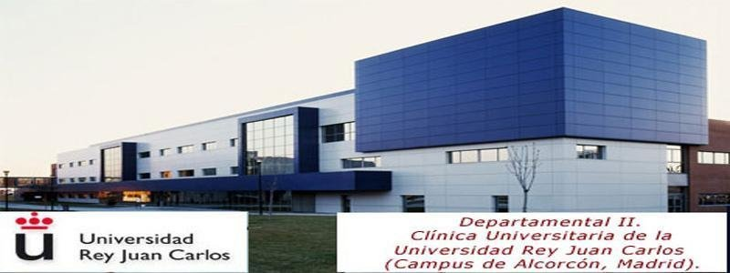

Summary
N/A
Experience
Profesor particular de programación
enero de 2017 - Present
- Java, Python, Ruby, Haskell, C++, Pascal
Programador de aplicaciones Web
Cuerpo Nacional de Policia
septiembre de 2016 - noviembre de 2016 (3 meses)
- Programación de aplicaciones web internas
- Java, Javascript, HTML, CSS
Programador en el área On Board Systems equipo de robótica terrestre
IXION Industry & Aerospace, S.L
marzo de 2016 - agosto de 2016 (6 meses)
- Desarrollo software
- Validación y verificación de software
- Integración de sistemas
- Java, C, C++, Wiki, Jenkins

Técnico informático
Universidad Rey Juan Carlos
abril de 2014 - julio de 2015 (1 año 4 meses)
Soporte informático a los ordenadores de la Universidad Rey Juan Carlos

Técnico informático
Universidad Rey Juan Carlos
2015 - 2015 (1 año)
- Soporte informático durante la realización de los exámenes de medicina.

Representante en AULA 2015
Universidad Rey Juan Carlos
2015 - 2015 (1 año)
Representante en AULA 2012 at Universidad Rey Juan Carlos
2012 - 2012 (1 año)
Education
Master Universitario en Ingeniería Informática
2017 - 2018
Grado en Ingeniería de Computadores
2010 - 2017
Actividades y grupos:
- Equipo de fútbol interuniversitario
- Miembro de la asociación de estudiantes Unión de Alumnos del Campus de Móstoles (UACM).
- Colaborador, Technology Fest: 2012-2014.
- Organizador, Technology Fest: 2017.
- Organizador, festividad de San Silicio: 2012-2015.
- Colaborador, FesTICval: 2013-2015.
- 4ESO-Empresa: 2017.
- Visitas guiadas a centros escolares: 2011-2014.
- Realización de torneos de cartas y torneos de videojuegos en diversas ocasiones.
Grado en Ingeniería Informática
2010 - 2017
MOOC Ciberseguridad
URJC online
Bachillerato Tecnologico
I.E.S. Gran Capitán
2007 - 2010
Monitor de tiempo libre y juegos
SHEMA Escuela de Tiempo Libre
2006 - 2008
Educación Secundaria Obligatoria
Colegio Liceo Ibérico
2003 - 2007
Educación Primaria obligatoria
Colegio Liceo Ibérico
2000 - 2003